La física como ciencia
φυσική
Physiké
(Naturaleza)
Física
Ciencia que estudia las propiedades del espacio, el tiempo, la materia y la energía, y sus
interacciones
Ciencia
Conocimientos lógicos comprobables con hechos mediante la observación y el razonamiento
Produce principios y leyes generales
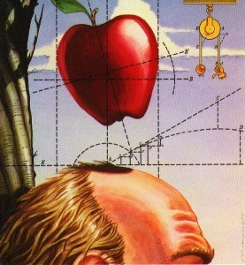
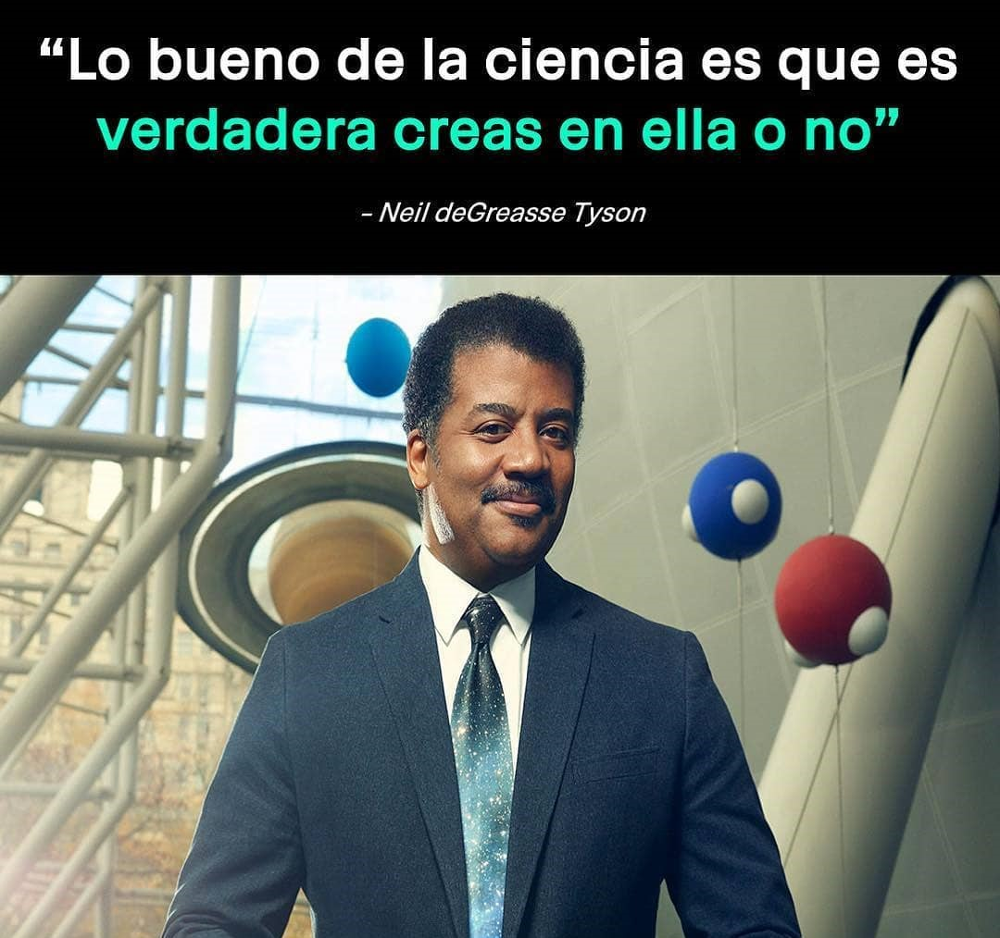
Tecnología
Técnicas, conocimientos y procesos para crear herramientas que satisfacen las
necesidades humanas
Tecnología

Ciencia
No somos cavernícolas, tenemos "Tecnología"...
División
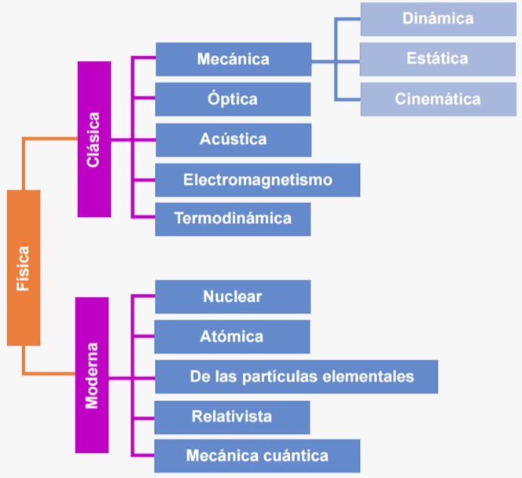
Clásica
Hasta finales del siglo
XIX
Mecánica
Estudia el movimiento y equilibrio de los objetos sólidos y fluidos
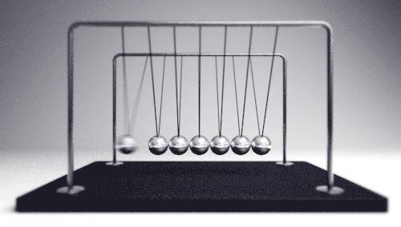
Óptica
Fenómenos relacionados con la luz (considerada como onda)
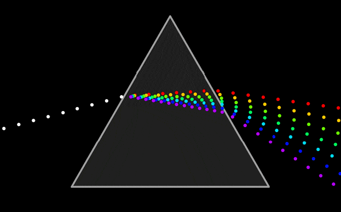
Acústica
Fenómenos relacionados con los sonidos, infrasonidos y ultrasonidos
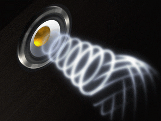
Electromagnetismo
Fenómenos asociados a la electricidad y al magnetismo
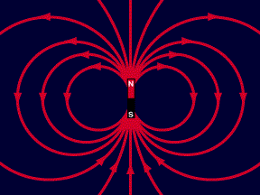
Termodinámica
Fenómenos relacionados con el calor
Moderna
A partir del siglo
XX
Física nuclear
Estudia los núcleos atómicos, en sus propiedades y comportamiento
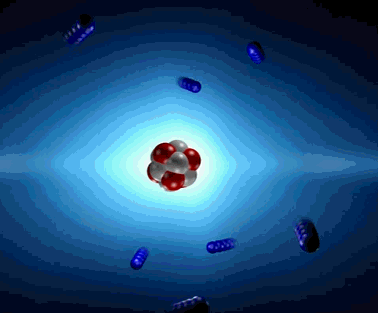
Física atómica
Estudia los átomos en sus propiedades y comportamiento
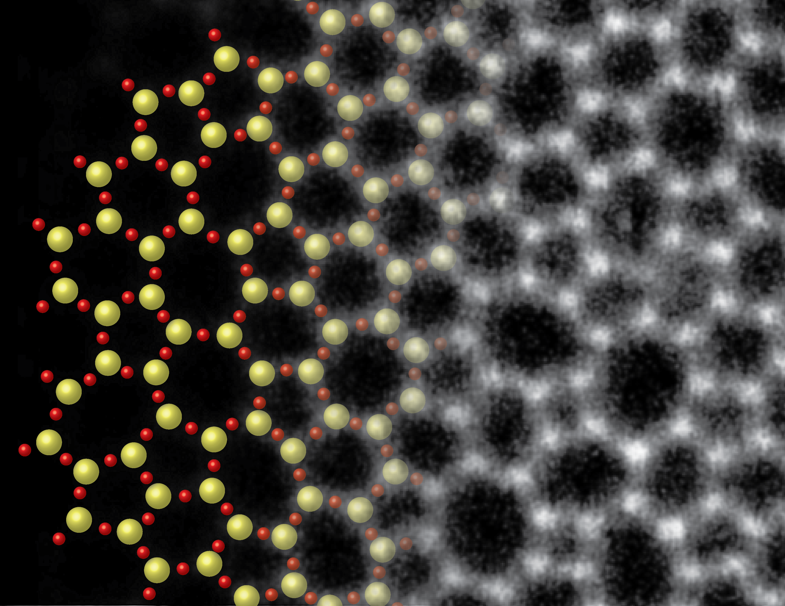
Física de partículas
Estudia la materia en sus componentes fundamentales y sus interacciones
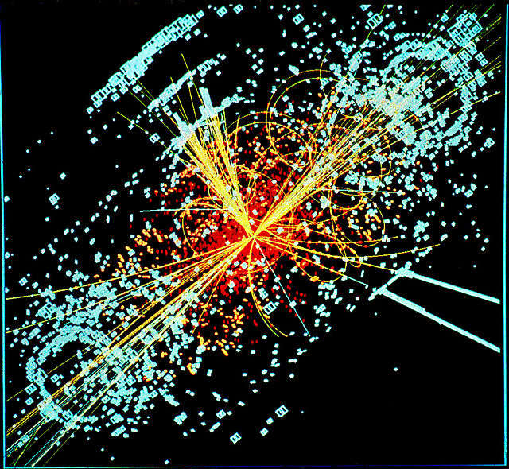
Mecánica cuántica
Estudia los fenómenos físicos en escalas microscópicas
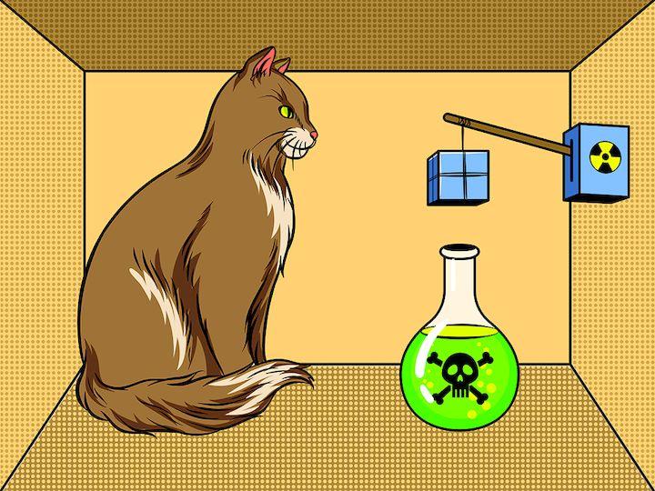
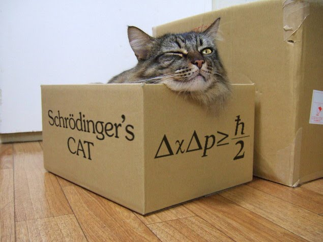